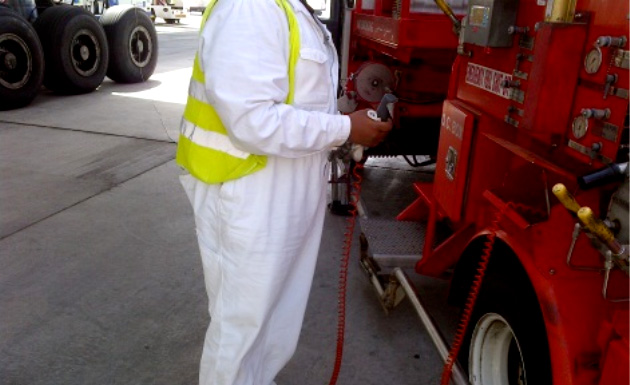
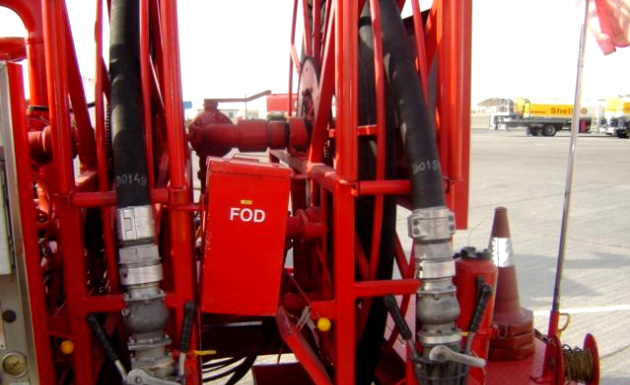
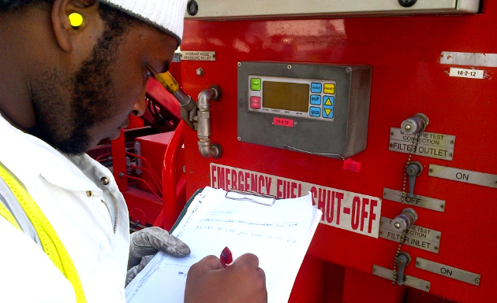
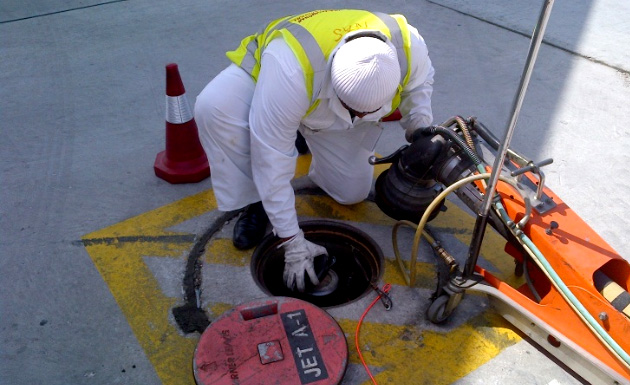
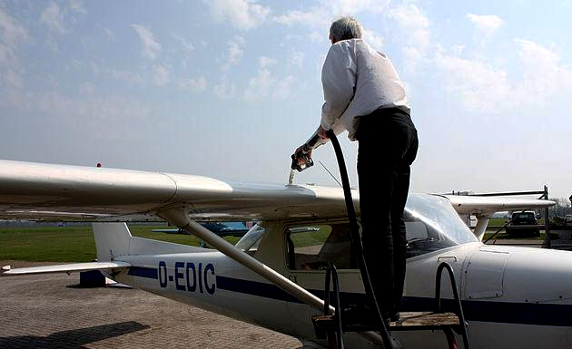

Approaching the Aircraft and Positioning the Vehicle
Underwing Fuelling Procedures
Overwing Fuelling Procedures
18.2.1 General
Fuelling equipments shall be specifically designed and constructed for this service and are to be maintained in a satisfactory and safe operating condition at all times according to the manufacturing recommendations.
Daily mechanical and quality control checks shall be made on each fuelling equipment to ensure that it is in satisfactory condition prior to fuelling.
Unauthorized personnel shall not be permitted in the fuelling area.
This applies to arriving and discharging passengers who shall not be allowed to linger adjacent to fuelling operations.
If passengers cannot be controlled, fuelling shall cease until the aircraft operator has resolved the problem.
Understanding the purpose and proper use of safety devices on fuelling equipment is extremely important.
Improper use of safety devices on fuelling equipment such devices or actions which intentionally disable
them can cause a lot of serious consequences.
Examples of such devices are:
Deadman Control
Bonding Cable
Lanyard
Override Devices

Approaching the Aircraft and Positioning the Vehicle
Density Provision
Contract with airlines is to provide Jet A-1 on a volumetric basis at ambient temperature
Airline is responsible for determining the fuel density or specific gravity at the aircraft and making any associated calculations
Neither the meters nor any other Aviation equipment shall be used for load calculation purposes
If an airline requires an accurate fuel density for operational reasons, as many fuel samples as are required shall be provided to the airline for the airline to measure the density using the airline’s equipment
Samples should be drawn from downstream of the filter
18.2.3 Underwing Fuelling Procedures
Unreel and securely connect the static bonding reel wire to a designated point on the aircraft.
If no point is designated, select a point (preferably with the assistance of the aircraft operator) which is a bare metal
Suggested components suitable for bonding sometimes include the Lip around many fuelling panel access doors or other similar apertures
Do not connect to:
Part of a wheel assembly
Any radio antenna
Any polished, sliding or stressed components such as undercarriage details, flap tracks or propellers
If the bonding cable become disconnected for any reason during the fuelling operation, stop the fuelling and re-bond the equipment again.
Notify airline ground staff before connecting hoses if there seems to be an unusual amount of heat or smoke coming from the aircraft engine, brakes or tires.
Dust caps on intake and delivery nozzles shall be in place at all times when hoses are not in use
They shall be taken off just before hoses are connected and replaced promptly after hoses are disconnected
Examine the condition of the aircraft adaptor.
Look for a cracked or missing adaptor teeth, loose coupling piston, and make sure the coupling is clean before connection.
Do not start Fuelling operation and inform the airline immediately if you have any doubt concerning the condition of the aircraft coupling.
Ensure the hose reel mechanism is in neutral and turns freely.
The nozzle should be carried under arm with hose over the shoulder to prevent damage to the nozzle or creating an undue stress on the hose coupling.
Nozzles shall not be dragged over the ground when being pulled out or recovered.
When connecting or retrieving intake or delivery hoses, particular care shall be taken to lay or coil them without kinking or twisting.
If kinking or twisting is unavoidable, the matter should be brought to a supervisors attention.
Modifications should be considered such as changing the length of hoses or relocating hose nozzle holders.

Reel and intake hoses shall be run out on a selected route out of the way of service or support vehicles.
Use only approved design, and proper length ladders to connect / disconnect delivery hoses
Connect delivery hoses to aircraft.
Open the nozzle valve.
Ensure that the opening lever handle is in the full open position.
It should not be possible to remove the coupling with the handle in this position.
Check that the nozzle has been securely attached by attempting to disconnect it with the valve lever in the open position.
For Dispensers:
Remove pit valve adapter cover and remove any dirt or water on adapter surface.
Attach lanyard to hydrant pit valve and extend lanyard towards the operating position and clear of obstructions.
Connect intake hydrant coupler to pit valve
Do not actuate hydrant pit valve until fuelling is ready to start
To minimize the risk of a hydrant intake hose or coupler being damaged by other vehicular traffic, it is recommended that couplers be painted a bright color such as yellow or day-glow orange and black hoses be painted with yellow bands.
Particularly care is required where operations are on a black tarmac.
Place the four (4) winged flag, hydrant pit barrier where applicable, traffic cones and warning devices, or lights, in position.
Ensure the lanyard is not snagged by the pit barrier and prevented from operating properly.
n the hours of darkness, illumination shall be provided either in the form of red or orange warning lights or by effective illumination of the flag by a vehicle search light.
Failure to use high visibility devices such as traffic cones and warning flags to secure the inlet hydrant coupler can lead to serious accidents.
Underwing Fuelling Procedures
Record meter totalizer readings & record fueling according to site specific procedure
Do not use totalizer readings from previous delivery.

Check with authorized airline representative to determine the fuel grade and quantity to be loaded.
Make sure that a Delivery Note is ready to record the current fuelling operation data.
Reconfirm that dispensing unit and hydrant pit connections comply with the grade required.
For Dispensers:
When airline representative advises that delivery can start:
Open hydrant pit valve.
Open the Aircraft fueling panel valves according to specific service provided.
Actuate deadman control
to start flow.
When airline representative advises that delivery can start, open the Aircraft fueling panel valves according to specific service provided
Engage pump and actuate deadman control to start flow.
Gradually advance engine speed control to the desired flow rate required by delivery conditions if this function is not automatic
Perform quality control Visual Check (VC) on line sample drawn downstream of the filter water separator or filter monitor after start of flow to aircraft
Approximately 1000 liters will invariably ensure that most pipe work and other components have been flushed of fuel from the previous delivery
To easily distinguish the sample valves, appropriate valve handle must be labeled correctly
This sample shall be retained during the fuelling for inspection by an airline representative if required.
The showing of the sample and/or the detector kit results to the airline representative is desirable and is based on local practice to facilitate the acknowledgment of acceptance of a water and particulate free delivery in the Delivery Note.
Some equipment include a provision to return accumulated samples to the fuel flow to the aircraft
An accumulation tank which contains one (1) or more samples which have failed a Visual Check shall not be delivered to an aircraft
Deadman timers should be actuated in frequency with the setting to avoid interruption to the fuelling.
Occasionally check the vehicle, inlet and all delivery hoses for leaks
Maintain a clear view of the fuelling equipment control panel, pressure gauge, pressure differential gauge, aircraft fuel tank vent for possible overflow.
While fuelling, don’t attempt to re-adjust any of the fuelling equipment pressure settings, if necessary stop the operation and consult your supervisor
During fuelling monitor the fuelling equipment general condition, general appearance, abnormal noise level, any abnormality indicators.
Monitor other operations close to the fuelling area.
Platform should not be operated during flow conditions
If it is necessary for the Airline representative or wingman to move the platform up or down, the flow must be stopped
Care shall be exercised at all times to prevent spillage of fuel, which could create a fire hazard
If spills or leaks occur, flow shall be stopped by vehicle emergency shut off, deadman shut down, laynard operation or gate emergency shut off as applicable
nder normal flow conditions, fuelling should be stopped if the fuelling sense (venturi) pressure is greater than the maximum indicated on or adjacent to the gauge.
Maintenance staff should normally mark the fuelling sense pressure gauge with the maximum set-up control pressure.
e alert and respond to instructions from the airline representative, or to situations requiring emergency action
When fuelling is complete, release the deadman control, retrieve it and store it properly
For a Dispenser: close hydrant valve
For a Refueller: disengage pump
Perform after fuelling quality control visual check (VC) on sample drawn from the filter water separator sump or upstream of filter monitor vessel
This sample need not be shown to the Airline representative. However, if the sample fails, a repeat sample is taken and if this too fails, the Airline Representative must be informed
Accurately record meter totalizer readings
Follow site specific procedure to record totaliser and get signature from the airline
Do not remove stands or lower lift platforms until airline representative has completed his check of the adapters, etc. and has completed panel work.
When retrieving hoses don’t drag or hit nozzles.
For Dispenser:
Disconnect inlet coupler and replace dust covers on hose coupler and hydrant adapter.
Sometimes the inlet coupler will remain tight and it may be necessary to ‘exercise’ the deadman briefly to ensure any pressure locked in between the pit valve and the inlet coupler is released.
Retrieve inlet hose and securely stow coupler in holders.

If it is necessary to leave fuelling equipment unattended in order to obtain an airline signature, the engine should be stopped but the keys left in place
The parking brake set and transmission in neutral or “park” for automatic transmissions
Engine should not be running while the vehicle is unattended. However, keys should be available on switch for someone to start it and move it in case of emergency
Assume that if someone else moves the vehicle when there is no emergency, that someone will be liable for any damage
Disconnect and retrieve bonding and grounding wires and ensure that no items are left behind.
Before driving away the fuelling equipment, ensure, by walking around the vehicle, that all hoses are properly stowed and that lift platform and rails are fully retracted.
After all hoses and platform are retrieved, and the pump is disengaged, Make sure the interlock system indicator light is OFF.
If not, don’t attempt to use the interlock override switch unless a double check has been performed to make sure that it is safe to move the equipment away from the aircraft.
Interlock Override switch is to be used just in case of emergency. It should not be activated on a routine basis.
In case Interlock Override was used due to an interlock system malfunction, the equipment shall be put out of service until the problem has been investigated and the interlock system is properly functioning
18.2.4 Overwing Fuelling Procedures
The following special precautions shall be adhered to for overwing fuelling:
For overwing refuelling one of the most critical requirements is the confirmation of the type and grade of fuel required.
For fuellings attended or not by the flight crew or aircraft operator, it is a mandatory that there is at least a fuel grade decal or other sign writing around or adjacent to the aircraft fill aperture to identify clearly the grade of fuel to be used in this aircraft or that a written order ”Fuel OrderForm” is provided in the form specially made for that purpose.
For unattended fuelling, the written order form should also include quantity and load balance instructions.
If no decal, fill a Fuelling Order Form
Do not carry loose items such as pens, pencils or loose change in the pockets of shirts or jackets since these may fall into the aircraft tanks.
Nozzle spouts used for fuelling jet aircraft must be of the flattened type with a major axis dimension of at least 67mm to prevent misfuelling of aircraft requiring Avgas
However vigilance is still required every time because a few jet aircraft have apertures too small to accept a 67mm dimension and some Avgas aircraft have apertures large enough to accept 67mm nozzles
Additional safeguards required are:
All overwing nozzles to be color coded
(Black for jet fuel and Red for avgas)
All aircraft fill apertures to be marked clearly with the grade of fuel required
Except in the case of contracted customers,
a written order with a clear statement of the grade required
Ascend, if applicable, to the wing top area from the wing leading edge.
Take care not to step or walk on prohibited wing areas, particularly the trailing edge or flaps.

Position hose on the ladder, not along side. Be sure mats protect wing edge from hoses
Do not route hoses over trailing edges
During overwing fuelling, it is necessary to avoid:
Mechanical damage to the floor of the aircraft tank from
Having a nozzle spout of excessive length.
Having an excessively powerful jet of product from the nozzle.
On all aircraft fuelled with overwing nozzles, it is necessary to avoid:
Static electricity build up from splash filling shall be prevented by ensuring that:
The end of the nozzle used for a particular aircraft reaches within a few inches of the floor of the aircraft tank or the surface of product already in the tank
Filling takes place at reduced flow until the end of the nozzle is covered by product
All fuelling personnel are aware of these requirements
Check that overwing nozzles do not include ratchet lugs or other mechanical devices to hold nozzle open
Overwi
ng nozzles shall not be wedged open under any circumstance
Bond the overwing nozzle to the aircraft if this is possible before removing the fill cap.
Maintain bonding until the cap is replaced.
Touch the nozzle to a bare metal part of the aircraft before opening the access door.
Perform a visual quality control check on a sample drawn from filter water separator vessel sump or from the inlet side of filter monitor immediately after fuelling is completed and before the aircraft is cleared for departure
Have available a clean waterproof tarpaulin to cover nozzle and fill opening during snow, rain or sandstorm
Do not use chamois leather or any other type of strainer at the aircraft fill opening when fuelling jet aircraft
In wet or dusty conditions, it may be necessary to block the gap between the nozzle and filler orifice with a clean, lint-free cloth made from natural fibers; ensure the tank is vented adequately for this procedure